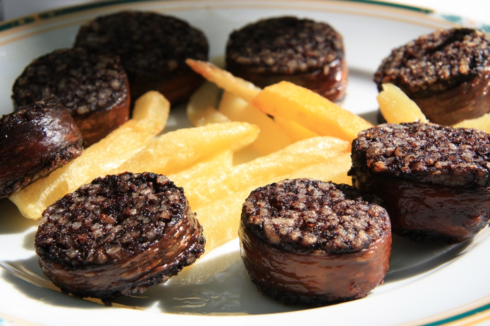

Gastronomía típica de Burgos
La gastronomía burgalesa es una de las más reconocidas de Castilla y León, con productos como la morcilla de Burgos, el lechazo asado, el queso fresco de Burgos y los vinos de la Ribera del Duero. La provincia ofrece una cocina tradicional, sustanciosa y profundamente ligada al territorio.

Productos imprescindibles
- Morcilla de Burgos con pimientos asados
- Lechazo asado al horno de leña
- Sopa castellana con pan, ajo y huevo
- Olla podrida con alubias rojas de Ibeas
Productos con reconocimiento
- Morcilla de Burgos
- Queso fresco de Burgos
-
Vinos de la Ribera del Duero
- Tintos jóvenes
- Crianzas
- Reservas y Grandes Reservas
- Alubias rojas de Ibeas
Multimedia
Productos y zonas de producción
| Producto | Zona de producción |
|---|---|
| Morcilla de Burgos | Toda la provincia, especialmente capital y alfoz |
| Queso fresco de Burgos | Capital y comarca |
| Vino Ribera del Duero | Sur de la provincia, ribera del río Duero |
| Alubia roja de Ibeas | Ibeas de Juarros y comarca |